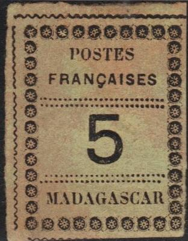
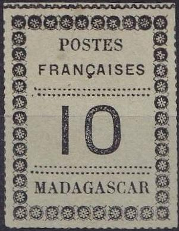
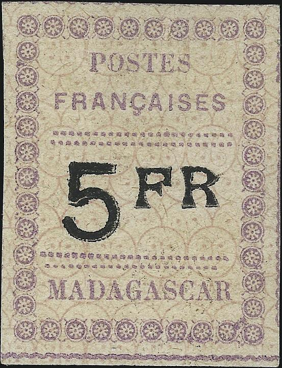
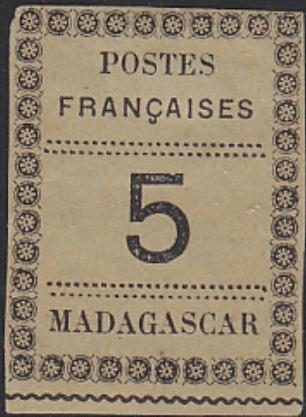

Sheetlet showing all 10 varieties.
Malagasy Republic
(French colony in
Africa)
Return To Catalogue - Madagascar 1891 local issue
Note: on my website many of the
pictures can not be seen! They are of course present in the
catalogue;
contact me if you want to purchase it.
There are 10 types of every value. Be aware of dangerous forgeries, even on cover. These stamps were issued without gum.
The different types (note the position of the horizontal dotted lines, see also the Serrane guide):
Sheetlet showing all 10 varieties.

Type 1 in the sheet; upper wavy line stops at left. Left wavy
line has a tiny break besides the upper horizontal lines.
Sometimes there is a dot in between the "E" and
"S" of "POSTES". "R" of
"MADAGASCAR" rather close to the right outer frame? In
all the 1 F stamps that I have seen, there is a dot in the first
"A" of "MADAGASCAR" and another dot in the
"S" of this word.

Type 2
Type 3, the bottom rows of dots start both above the
"M" of "MADAGASCAR".
Type 4 in the sheet. The space between the horizontal dotted
lines is too large (both on top and below).
Type 5, break in the upper right wavy line just above the upper
right circular corner ornament (not present in the 5 c?). In the
5 F there are a few flaws in the right hand side (between the
second and third ornament from the bottom and between the fifth
and sixth ornament from the bottom).
Type 6
Type 7; the first dots of both the upper dotted horizontal lines
are rather small. The wavy line on top is usually broken above
the 3rd circle from the left.

Type 8; note that the lowest horizontal dotted line stops before
the beginning of the "R" of "MADAGASCAR". The
dots below the "I" of "FRANCAISES" are badly
done. The 5 F has some defects in the lower right corner. A
dangerous forgery of the 5 F value of type 8 exists (see Serrane
guide)

Type 9; the last dot of the third horizontal line of dots is
placed lower.
Type 10 in the sheet, second "S" of
"FRANCAISES" damaged on top. Upper horizontal dotted
lines not extending very far to the right hand side. Dot between
"E" and "S" of "POSTES" (not in the
5 c and 10 c values?).
{kind=link}
{kind=link}
{kind=link}
{kind=link}